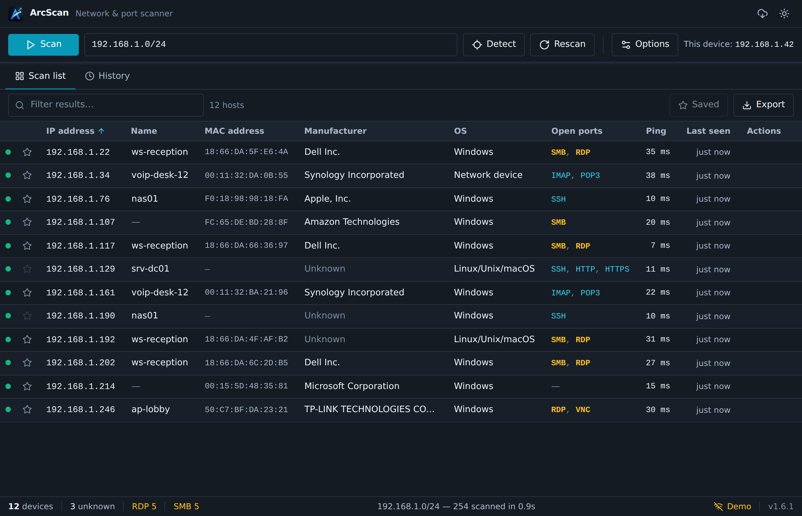

Auto-detects your subnet
Opens ready to scan your local network — or enter any IP, dashed range, or CIDR.
Free & open source · Windows & macOS
ArcScan is a fast, lightweight network & port scanner. Every device — IP, hostname, MAC, manufacturer, open ports — in one clean view.
Loading latest release…
Windows (x64) · Windows (ARM64) · macOS (universal) · SHA-256 checksums

Read-only discovery that inspects what's reachable — it never attacks, brute-forces, or uploads anything.
Opens ready to scan your local network — or enter any IP, dashed range, or CIDR.
ICMP + TCP probing with an ARP-verified LAN sweep keeps results consistent run to run.
IP, hostname, MAC, manufacturer, OS guess, open ports and ping — sortable, filterable.
Open a device's web UI, RDP, SSH or SMB shares, send Wake-on-LAN, or copy its address.
Every scan is stored locally. Star known devices, label them, spot new arrivals.
Export to CSV, JSON or XML. The app keeps itself current with signed updates.
A native desktop interface built for scanning — not a repurposed web page.
Grab the installer for your OS. Windows x64 & ARM64 and macOS are all supported.
Not code-signed yet — Windows SmartScreen may warn on first launch: choose More info → Run anyway. On macOS, right-click → Open once. Verify the SHA-256 checksum for certainty.
Press Scan. Devices appear in seconds — and the app updates itself from then on.
Yes — free and open source. The full source lives on GitHub.
Windows 10/11 on x64 and ARM64, and macOS — one universal build for Apple Silicon and Intel.
No. Scans run entirely on your machine and results stay local — nothing is uploaded. This website's only network call is a read-only check to GitHub for the latest version.
No admin is needed to scan — ArcScan uses ordinary OS networking. The installer may prompt for elevation to install for all users, like any app.
The installers aren't code-signed with a paid certificate yet, so SmartScreen/Gatekeeper flag a new publisher. Proceed as described above, and verify the SHA-256 checksum for peace of mind.
ArcScan checks for signed updates and installs them from within the app, so you stay current without revisiting this page.
Free. Lightweight. Native. Windows & macOS.
Download ArcScan